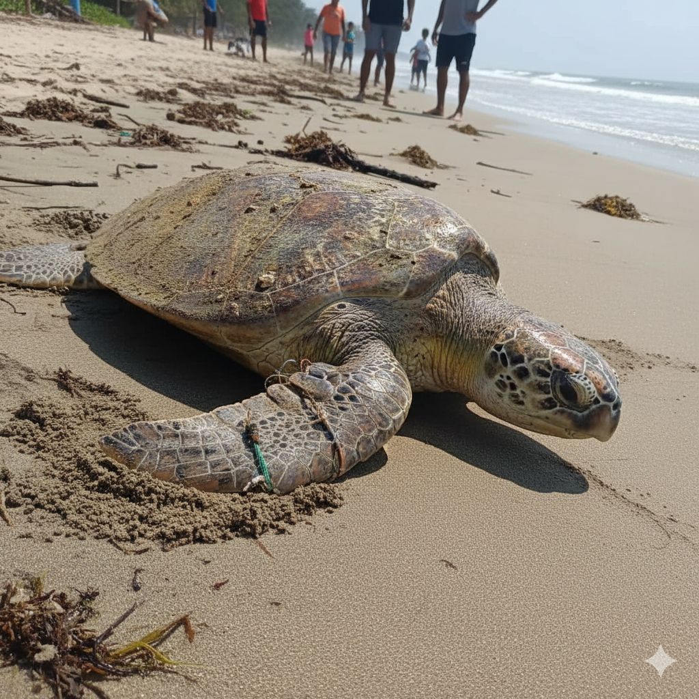
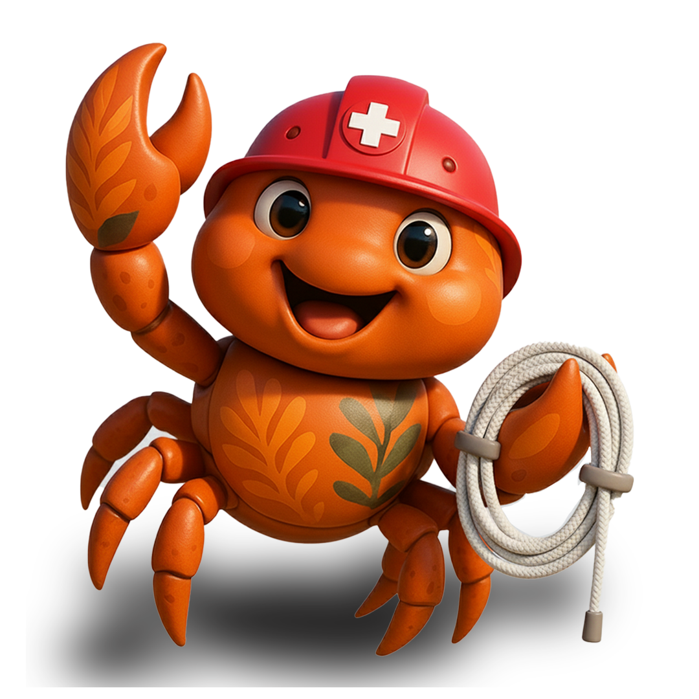
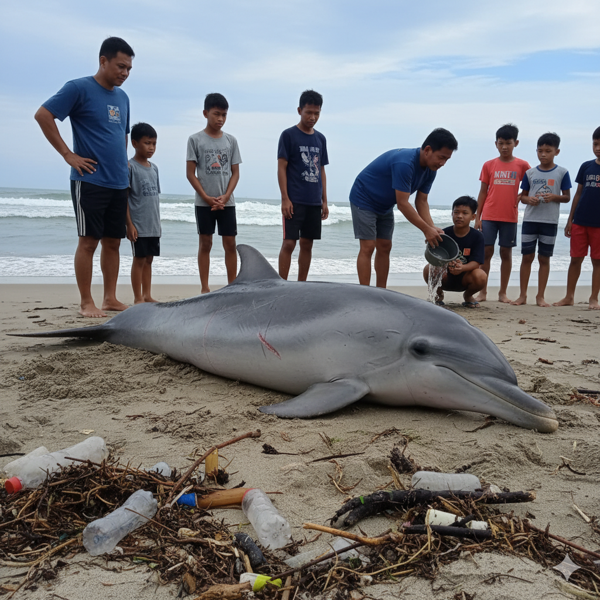
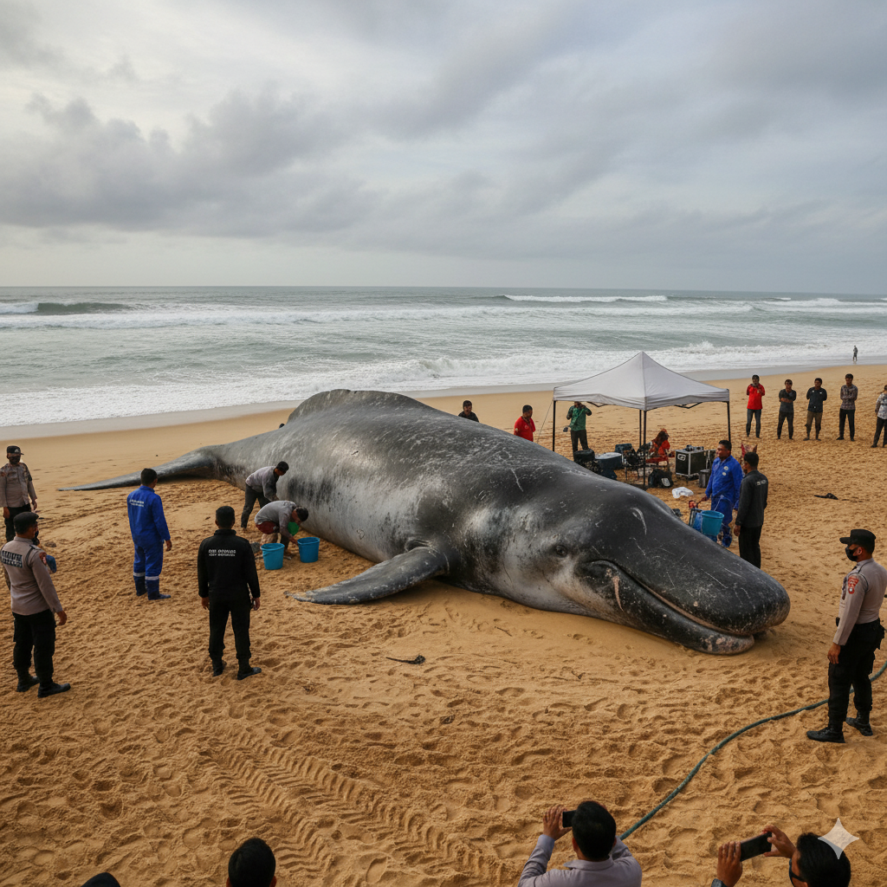

Turtle
Stranded Turtle
Panduan menangani penyu yang terluka atau terdampar di pantai
Pelajari cara aman menangani satwa laut yang terluka sebelum tim konservasi tiba


Panduan menangani penyu yang terluka atau terdampar di pantai

Cara aman membantu lumba-lumba yang terdampar

Protokol khusus untuk mamalia laut besar
Jika Anda menemukan satwa laut yang membutuhkan bantuan, segera laporkan melalui sistem Emergency Rescue kami.
Report Now